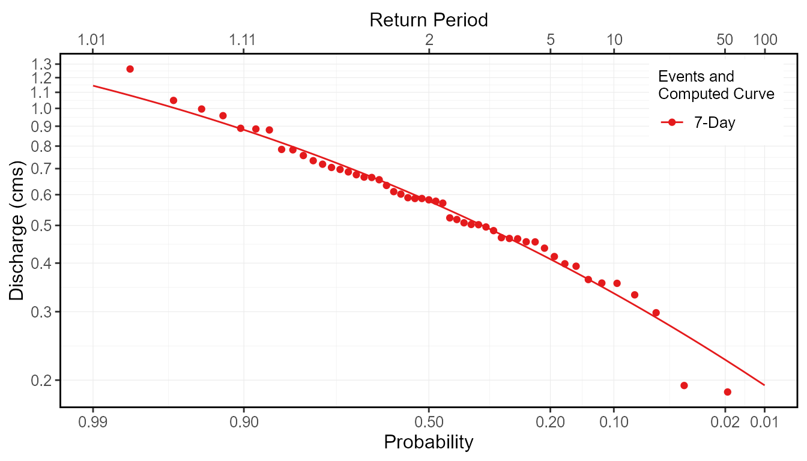
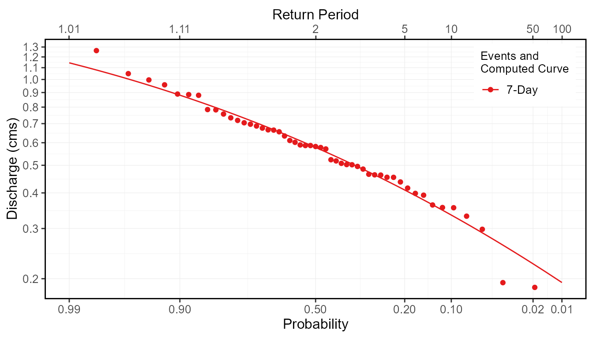

Computing Frequency Analyses with fasstr
Source:vignettes/fasstr_frequency_analysis.Rmd
fasstr_frequency_analysis.RmdThe Flow Analysis Summary Statistics Tool for R (‘fasstr’) is a set of R functions to tidy, summarize, analyze, trend, and visualize streamflow data. This package summarizes continuous daily mean streamflow data into various daily, monthly, annual, and long-term statistics, completes annual trends and frequency analyses, in both table and plot formats.
This vignette is a guide on the various volume frequency analysis functions found in ‘fasstr’ to plot frequency data and determine frequency quantile statistics. The methods for these analysis follow those used in the US Army Corps of Engineers HEC-SSP Statistical Software Package. See their website for more information on the software and links to their User Manual for more in-depth information. In this vignette you’ll learn what functions to use for specific analyses, arguments to customize analyses, and what results and outputs are produced.
Overview
Computing a frequency analysis with ‘fasstr’ allows for options and customization of both the inputs and outputs. These functions plot probabilities of flow data using chosen plotting options and calculates frequency quantiles (ex. 7Q10) based on fitting data to distributions using selected fitting methods. There are four functions within ‘fasstr’ that conduct frequency analyses, each either their own purpose:
- compute_annual_frequencies() - conduct an annual frequency analysis from daily streamflow data (analysis calculates minimums/maximums and subsequently ranks that data).
- compute_frequency_quantile() - conduct an annual frequency analysis from daily streamflow data and output a specific quantile based on a duration (rolling days) and return period (analysis calculates minimums/maximums and subsequently ranks that data).
- compute_HYDAT_peak_frequencies() - conduct an annual frequency analysis from instantaneous peak data (minimum or maximum) for stations from a HYDAT database.
- compute_frequency_analysis() - conduct a general frequency analysis with custom data (analysis ranks data provided; used within each of the previous functions).
With the exception of the compute_frequency_quantile() function which only produces a quantile value, the frequency functions produce five outputs contained within a list. See the sections below for more information on each output and options. The five outputs include the following:
- Freq_Analysis_Data - data used for analysis (either data provided in compute_frequency_analysis(), computed extremes in compute_annual_frequencies(), or HYDAT extracted extremes in compute_HYDAT_peak_frequencies()).
- Freq_Plot_Data - data used to plot probabilities based on the selected plotting positions (weibull, hazen, or median), includes the event values, probability and return periods. Option to include/exclude the compute curve.
- Freq_Plot - plot of event probabilities based on the selected plotting positions (weibull, hazen, or median).
- Freq_Fitting - the fitdistplus::fitdist object that contains information on the computed curve based on the selected distribution (Pearson Type III (or log of) or weibull) and fitting methods (methods of moments or maximum likelihood estimation).
- Freq_Fitted_Quantiles - the computed fitted quantiles based on the selected fitting options and selected quantile probabilities.
Functions and Data Inputs
Annual Daily Minimums/Maximums
- compute_annual_frequencies()
- compute_frequency_quantile()
To determine frequencies of annual daily minimum or daily maximum flows, or of any duration days, from a daily streamflow data set, the compute_annual_frequencies() and compute_frequency_quantile() functions will take daily data, either from HYDAT using the station_number argument or your own data frame of data using the data argument to complete an analysis. As with most ‘fasstr’ functions, options for rolling days, missing values, and date filtering can be completed using the function arguments (roll_days, water_year_start, etc).
The compute_annual_frequencies() function will produce all five outputs from the analysis, as listed above, including the plotting data, plot, and computed quantiles. If just the quantile is desired, and assuming your data fits the selected distributions, the compute_frequency_quantile() function can be used. By supplying the desired duration (roll_days argument) and the desired return period (return_period argument) a single numeric quantile value will be returned from the data.
Annual Peak Minimums/Maximums from HYDAT
- compute_HYDAT_peak_frequencies()
To determine frequencies of annual instantaneous minimum or maximum flows from stations from HYDAT, the compute_HYDAT_peak_frequencies() function will extract the data, if available, and complete the analysis. As this data is extracted from HYDAT by listing the station using the station_number argument and no filtering is completed on the data, the data argument and most of the filtering arguments are not available for this function. If you have a data frame of your own instantaneous maximums or minimums, a custom analysis can be completed using the compute_frequency_analysis() function as described below.
Custom Data
- compute_frequency_analysis()
To complete a frequency analysis using custom data, like peaks-over-threshold analyses, the compute_frequency_analysis() function will take the provided data and complete the analysis. The data provided must contain three columns:
- events - the year or other label to identify the specific flow event (could have 1999a and 1999b if doing a peaks-over-threshold).
- values - the flow value in cubic metres per second.
- measures - the type of flow value/event (i.e. “Inst. Peak” or “7-Day Low”); can have multiple measures (ex. 3-day and 7-day) that will be plotted and computed.
Here is an example of data the can be provided, wrangled from the annual lowflows function:
low_flows <- calc_annual_lowflows(station_number = "08NM116", start_year = 1980, end_year = 2000, roll_days = 7) low_flows <- dplyr::select(low_flows, Year, Value = Min_7_Day) low_flows <- dplyr::mutate(low_flows, Measure = "7-Day") low_flows
# A tibble: 21 x 3
Year Value Measure
<dbl> <dbl> <chr>
1 1980 0.655 7-Day
2 1981 0.885 7-Day
3 1982 1.05 7-Day
4 1983 0.634 7-Day
5 1984 0.784 7-Day
6 1985 0.589 7-Day
7 1986 0.719 7-Day
8 1987 0.355 7-Day
9 1988 0.186 7-Day
10 1989 0.577 7-Day
# ... with 11 more rowsThis data can then be applied to the compute_frequency_analysis() function. This example has the default column names in the data and this do not need to be listed, but are shown for demonstration.
compute_frequency_analysis(data = low_flows, events = Year, values = Value, measures = Measure)
Usage, Options, and Outputs
Analysis Data
The returned Freq_Analysis_Data object provides the raw data used in the frequency analyses. Based on the selected frequency function used, this tibble will contain the respective data; the provided values with the custom analysis, the computed extremes with the annual analysis, and the HYDAT extreme peaks from HYDAT in the peak analysis. See each functions’ documentation for more information. This tibble object provides the analysis data as the annual and HYDAT peak data are calculated or extracted from HYDAT.
To provide examples of the outputs, an annual analysis will be completed on a Mission Creek HYDAT station (the plot_curve argument is set to FALSE for the start of this example):
freq_analysis <- compute_annual_frequencies(station_number = "08NM116", start_year = 1981, end_year = 2010, roll_days = 7, plot_curve = FALSE)
The following is an example of the outputted Freq_Analysis_Data tibble:
freq_analysis$Freq_Analysis_Data
# A tibble: 30 x 3
Year Measure Value
<dbl> <fct> <dbl>
1 1981 7-Day 0.885
2 1982 7-Day 1.05
3 1983 7-Day 0.634
4 1984 7-Day 0.784
5 1985 7-Day 0.589
6 1986 7-Day 0.719
7 1987 7-Day 0.355
8 1988 7-Day 0.186
9 1989 7-Day 0.577
10 1990 7-Day 0.958
# ... with 20 more rowsFrequency Plotting
Based on the analysis data in the Freq_Analysis_Data object, the data is ranked, by default for low-flow frequencies, from low to high with the lowest flow value ranked at 1. To complete high-flow analyses and rank the data from high to low, set the use_max argument to TRUE. The probabilities of each event are then determined using the following generalize plotting equation:
- P = (m - A) / (n + 1 - A - B)
where:
- m is the rank of the value
- n the total number of events in the data
- A & B are the constants depending on which plotting position is used (weibull, median, or hazen)
The probability plotting positions (A and B constants) are selected using the prob_plot_position argument, listing 'weibull' where A and B are 0, 'median' where A and B are 0.3, or 'hazen' where A and B are 0.5. The selected plotting position does not have an effect on the final computed curve. To plot the data on a logarithmic scale, set the use_log argument to TRUE.
With these options set, the data used for plotting is outputted in the Freq_Plot_Data tibble object. The events are sorted by measure, and ranked by the event value, and provides the probability and the return period for each event, used for plotting. See the following for an example of this output:
freq_analysis$Freq_Plot_Data
# A tibble: 30 x 5
Year Measure Value Probability `Return Period`
<dbl> <fct> <dbl> <dbl> <dbl>
1 1988 7-Day 0.186 0.0323 31
2 1993 7-Day 0.298 0.0645 15.5
3 2002 7-Day 0.331 0.0968 10.3
4 1987 7-Day 0.355 0.129 7.75
5 2003 7-Day 0.363 0.161 6.2
6 2010 7-Day 0.454 0.194 5.17
7 2007 7-Day 0.454 0.226 4.43
8 2008 7-Day 0.463 0.258 3.88
9 1994 7-Day 0.465 0.290 3.44
10 2009 7-Day 0.502 0.323 3.1
# ... with 20 more rowsThis data is then used for plotting and outputted in the Freq_Plot ggplot2 object. See the example below. To change the probabilities/vertical lines shown on the x-axis, change the values using the prob_scale_points argument to list the breaks.
freq_analysis$Freq_Plot

Frequency Analysis
The ‘fasstr’ functions also compute frequency quantiles, like commonly used 7Q5, 7Q10, 5Q30, etc. This is done so by choosing the appropriate distribution to fit with the data, choosing either “PIII” (default) or “weibull” with the fit_dist argument. For the “PIII” distribution, the data will be fit using method of moments fitting or “MOM”, while “weibull” can use “MOM” or maximum likelihood “MLE” by selecting it using the fit_distr_method argument. Using these two arguments, the data will be fitted to your distribution of choice and compute the curve.
To see how the computed curve fits against the plotted events, you can set the plot_curve argument to TRUE (default):
freq_analysis <- compute_annual_frequencies(station_number = "08NM116", roll_days = 7, plot_curve = TRUE) freq_analysis$Freq_Plot

Curve Fitting Parameters
The computed curve is calculated using the ‘fitdistrplus’ package, and the results from the function are saved in the Freq_Fitting object in the list. The ‘fitdist’ object contains information regarding the fitting process, including the shape, location, and scale parameters, amongst other statistics. See the ‘fitdistrplus’ documentation for more information what is provided. As per the documentation, there are several ways to view the fitdist object, three of these including using the generic print(), summary() and plot() functions. See the following examples for how to view some of the fitting information.
print(freq_analysis$Freq_Fitting$`7-Day`)
Fitting of the distribution ' PIII ' by matching moments
Parameters:
estimate
shape 11.28928876
location 0.30390915
scale -0.04948906summary(freq_analysis$Freq_Fitting$`7-Day`)
Fitting of the distribution ' PIII ' by matching moments
Parameters :
estimate
shape 11.28928876
location 0.30390915
scale -0.04948906
Loglikelihood: 20.56332 AIC: -35.12663 BIC: -29.33116 plot(freq_analysis$Freq_Fitting$`7-Day`)

Fitted Quantiles
Based on the fitting the events to the distribution, flow events with specific probabilities/return periods (quantiles) can be extracted from the computed curve. The desired quantiles are selected by listing the probabilities in the fit_quantiles argument (defaults to c(.975, .99, .98, .95, .90, .80, .50, .20, .10, .05, .01),). The results are outputted in the Freq_Fitted_Quantiles tibble in the list. In the example below of the quantiles, the 7Q5 value would be the 7-day flow value with a 5-year return period, so 0.409 cms in this example.
freq_analysis$Freq_Fitted_Quantiles
# A tibble: 11 x 4
Distribution Probability `Return Period` `7-Day`
<chr> <dbl> <dbl> <dbl>
1 PIII 0.01 100 0.194
2 PIII 0.05 20 0.280
3 PIII 0.1 10 0.334
4 PIII 0.2 5 0.409
5 PIII 0.5 2 0.578
6 PIII 0.8 1.25 0.772
7 PIII 0.9 1.11 0.881
8 PIII 0.95 1.05 0.972
9 PIII 0.975 1.03 1.05
10 PIII 0.98 1.02 1.08
11 PIII 0.99 1.01 1.14